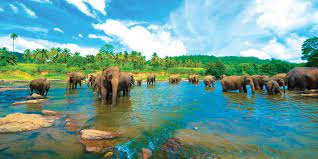
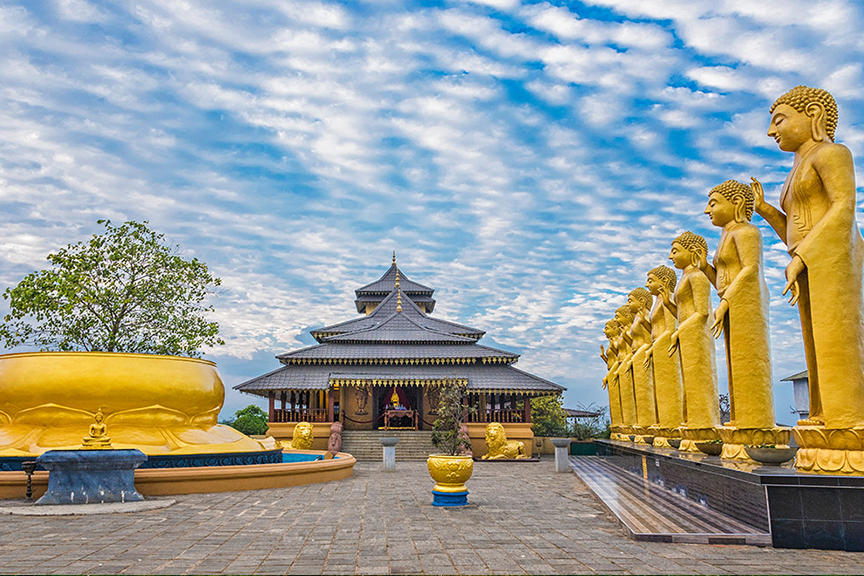
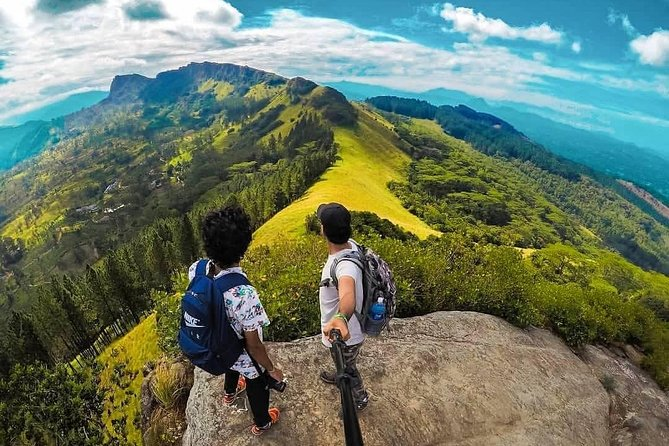
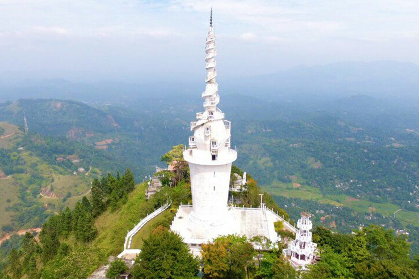
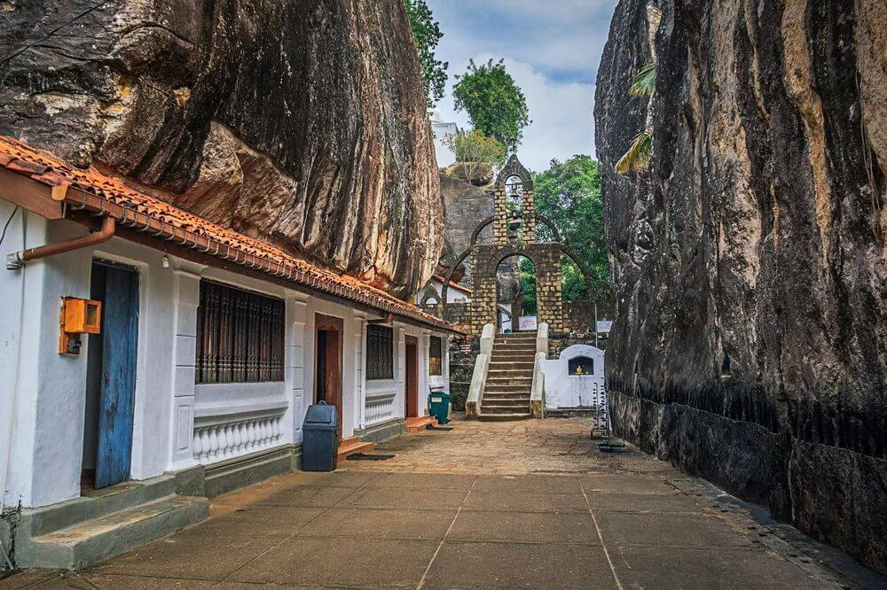
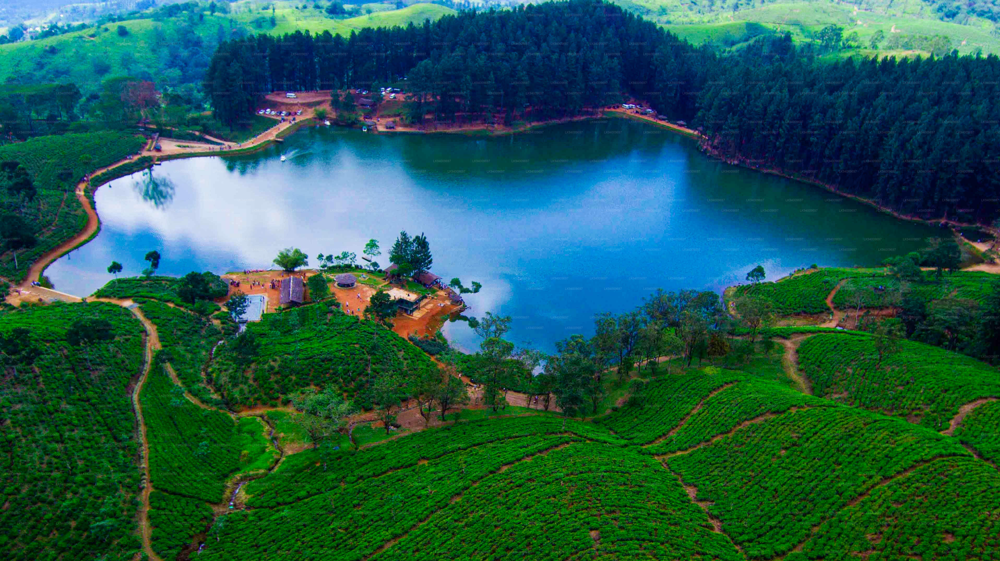
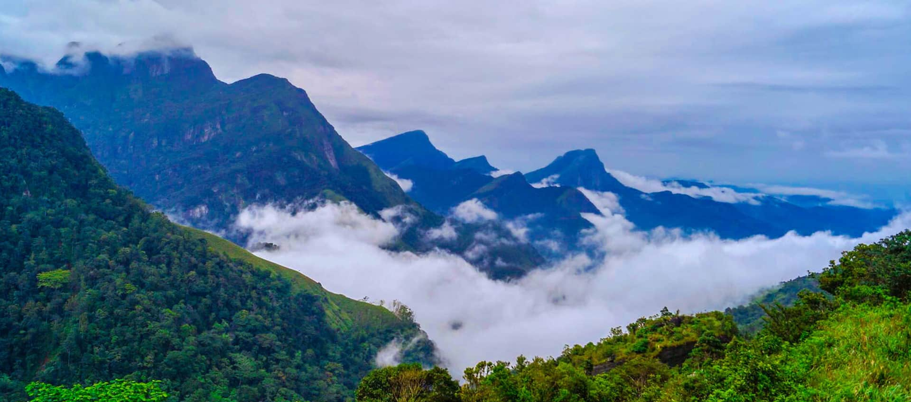
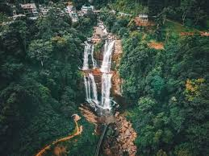
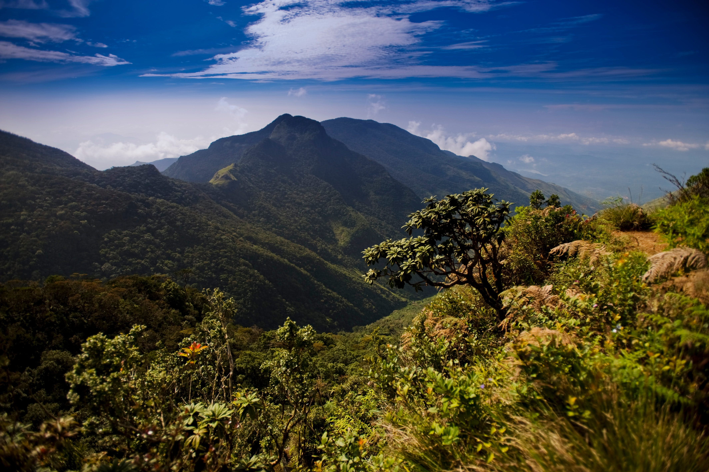
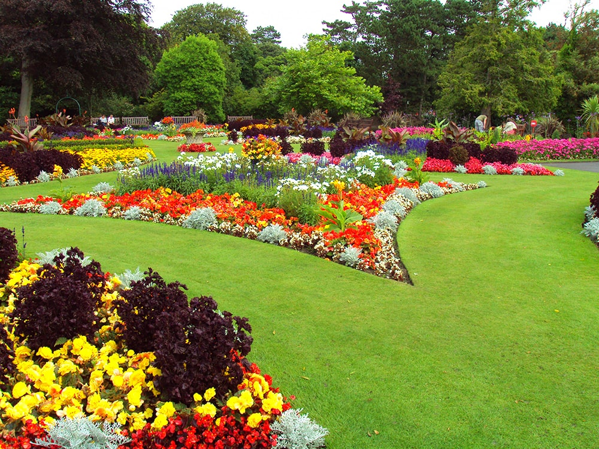

Temple Of Tooth Relic (Sri Dalada Maligawa)

Considered as one of the most important temples of Buddhists in Sri Lanka, the Temple of Tooth Relic is located to the north of Kandy Lake and is one of the most remarkable places to visit in Kandy Sri Lanka. The sacred tooth of Lord Buddha enshrined in the temple makes it one of the popular Kandy tourist places. The room housing the tooth is open to devotees to offer their prayers. However, nobody gets to see the tooth because it is kept in a golden casket inside a stupa-like structure. The temple is housed in the royal palace complex of the former Kingdom of Kandy. One of the best places to see in Kandy, this temple is of great importance due to the belief of the country on the tooth. The temple has rituals thrice a day. The temple was designated a UNESCO World Heritage Site 1988. The temple still stands strong even after facing attacks twice. Along with the outside, tourists need to visit the inside of the temple to actually appreciate the architecture. There are holes in the walls which contain lamps lit using coconut oil. Tourists need to pay the entry fees and they should visit between 5:30 AM and 8:00 PM.
Pinnawala Elephant Orphanage
This one's considered amongst the best places to visit in Kandy for those who are fascinated by the wildlife! Plan a day out with wild Asian elephants at Pinnawala Elephant Orphanage. This is a -popular breeding ground of 90 plus elephants who stay in their natural habitat. Watch these adorable elephants bathe, play around, and feed them fruits. Tourists can see them when they take a tour around the orphanage to see the majestic animals. If you are in Kandy visiting places, then this spot is perfect if you want to have a small picnic along with your friends or family. Pinnawala is the place where abandoned elephants are raised. Not only orphans but also elephants who are seriously injured or those who get aloof from their group are given proper shelter & care at the orphanage. The place is situated in the Pinnawala village present in the Sabaragamuwa Province of Sri Lanka. The orphanage was started in 1975 by the Sri Lanka Department of Wildlife Conservation. The place has evolved into an amazing tourist destination in recent years. The elephants are kept quite well and you may definitely see that while at this place. The orphanage also accepts elephants that are donated to them and they bring them back to their health. The elephants have mahouts for them who give them baths and proper food on a timely basis. If you’re looking for natural bathing places in Kandy, then this is it!
Nelligala Temple

Nelligala Temple located in the village of Murutalawa, 700 km above sea level, 11 km from Kandy town
and 7 km from Peradeniya town. Nelligala temple which was started in the year 2015 is a temple
situated on the top of the Nelligala rock which is surrounded by the Alagalla, Hanthana,
Hunnasgiriya, Batalegala and Atipala mountain ranges. Nelligala International Buddhist Center is a
sacred place in the truest sense of the word.
The newly constructed Sri Sumana Saman Deva statue in Sabaragamuwa adds another splendor to the
sacred area. Nelligala Sumana Saman statue a place of worship that everyone should go to. You can
also pay homage to the majestic and majestic statue of Lord Sumana Saman, an Aryan disciple built at
the Nelligala International Buddhist Center, mounted on a white elephant, a luxury vehicle, from the
summit of Samantha Girihisa.
History Of Nelligala Temple: The Nelligala Sacred Area was created in 2014 by conserving a scrub
forest. It should be specially mentioned that the forest has been conserved here. It took six years
of dedication to build this sacred place in the middle of the blue mountain range. The statues and
designs here are golden in color and the bodhi tree in a large bowl of gold is special. The seventy
feet high bubble-shaped pagoda stands out among other creations of gold on a blue background.
Another surprise is that the stupa was completed in three months.
Hanthana Mountain Range – Hiker’s Paradise
One of the most beautiful places in Kandy, Hanthana Mountain Range is every nature lover’s paradise. The mountain ranges are located on the outskirts of Kandy city and appeal to tourists as an amazing picnic and hiking spot. One can even enjoy the exhilarating views of the city from top. Declared as environmentally protected areas, the range consists of seven peaks, Uuara Kanda being the highest one. This is also one of the best visiting places in Kandy.
Ambuluwawa Temple

Ambuluwawa Tower is located in the suburbs of Gampola Town in Sri Lanka. There has been an increased
popularity in recent times especially due to the breathtaking views you can experience when you
climb to the top of the Ambuluwawa Tower. It is also known for its narrow spiral staircase which
some visitors find challenging to climb. It is one of the coolest places to visit in Sri Lanka if
you are up for the challenge.
Ambuluwawa mountain peak has a height of 3567 feet above sea level. It is located over 1000 feet
above from the Gampola Town. The tower is located on the summit of the mountain peak. Since there
are no other mountains in the surrounding area and due to its unique location, Ambuluwawa Tower gets
an undisturbed view from far away and vice versa. The tower is visible from Gampola Train Station.
The 48 meters tall, cone-shaped tower houses the Stupa (Pagoda) of the Buddhist Temple. As you climb
up, it has several viewing platforms for you to enjoy the stunning views. The staircase gets
narrower as you go up. The spiral staircase will be a challenging one to climb if you are not
comfortable with heights.
Aluvihare Rock Temple
The Aluvihare Rock Temple is also called Matale Alu Viharaya. It is a sacred Buddhist temple situated in Aluvihare, Matale District of Sri Lanka. Surrounded by hills, the gorgeous Aluvihara cave is located 30 kilometres north of Kandy on the Matale-Dambulla road. The history of Aluvihare Rock Temple goes back till the 3rd Century B.C. It was during the rule of King Devanampiyatissa. The King was the one who built the dagoba, the Aluvihare. He also planted a Bo sapling and founded the temple after the introduction of Buddhism to the country during his rule. The temple has many caves, stupas and religious paintings.
Sembuwatta Lake

Sembuwatta Lake is a beautiful attraction point located within the village of Elkaduwa in Matale
district of Sri Lanka. A quiet and ravishing human-made lake made up of natural spring water,
Sembuwatta Lake is adjacent to the Campbell’s Lane Forest Reserve.
Sembuwatta Lake also has a natural swimming pool by its side. The lake processes electricity for the
many villages in the area making it a lifeline for the locals as well as a pleasing addition to the
long list of attractions within Sri Lanka. The Sembuwatta Lake has beautiful pine trees, situated on
top of the mountain, and it is an epitome of majestic experience, which is a well-known spot for
picnics, hiking, and nature trails. Sembuwatta Lake is around 30 to 39 feet deep.
Knuckles Mountain Range

Knuckles Mountain range is an unusual terrestrial landform located in Matale and Kandy, in Central
Province, Sri Lanka. The range is a World Heritage Conservation Area and is relatively untouched.
The range features 34 peaks, ranging between 900 metres to 2000 metres. Five of these mountain peaks
make the formation of a clenched fist.
The name was given by the British, and the locals call this range 'Dumbara Kanduvetiya', which means
mist-laden mountains. The knuckles Mountain Range is called so because of its uncanny resemblance to
the fingers of a clenched fist.
The range, with its grasslands, rugged peaks, meandering roads and cascading streams and waterfalls
are a vibrant biodiversity zone. Despite being only 0.03% of the country's area, this zone consists
of 34% of Sri Lanka's endemic vegetation. The forest cover of the region includes dry evergreen
forests, montane forests, sub-montane forests, dry and wet savanna etc.
The range faces two significant threats: constant cultivation of cardamom has deprived the forest of
its vegetation cover, and a plant species called Mist Flower, which spreads into the woods and
destroys the vegetation. However, there are some local and global initiatives to preserve and
restore the cover. Currently, watershed conservation and restoration project is being undertaken
here full-fledged.
Ramboda Falls
If you are visiting places in Nuwara Eliya, make sure you visit the beautiful falls. Located in the Pussellawa district, in the city of Kandy, it is known for scenic landscapes comprising of highlands, ridges, plains, streams and hilly mountains. The best attractions include the Ramboda Falls. It is lcoated on the orad between Kandy and Nuwara Eliya. Make sure you don’t miss it.
Horton Plains National Park
One of the spectacular and happening Nuwara Eliya tourist places is the Horton Plains National Park and if you wish to interact with wildlife in Sri Lanka then this place is a must visit. A UNESCO World Heritage Site, the Horton Plains National Park is stretched across two of the highest mountains in Sri Lanka which are Kirigalpotta and Totapola.
Hakgala Botanical Garden
This is that place for nature savvys. It is 28 acres of nature, having all it colours and shades. The garden has a huge variety of flowers and exotic plants. These plants are divided into various sub gardens like Upper Flower Garden, Fernery, Rock Garden, Arboretum, Rose Garden and Glass House etc and a must visit among the Places to visit in Nuwara Eliya.